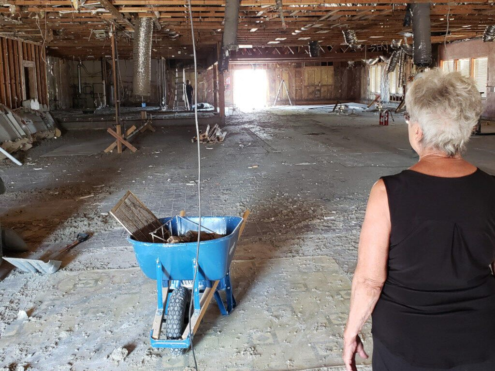
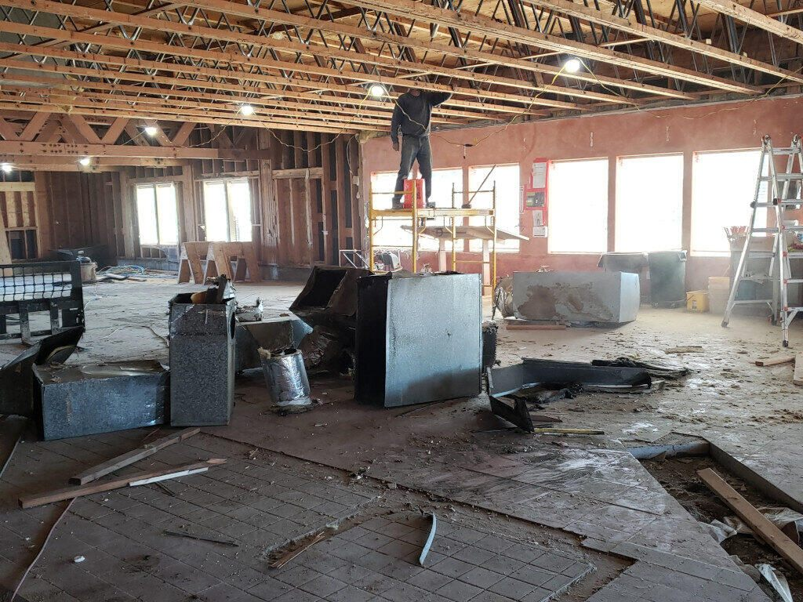
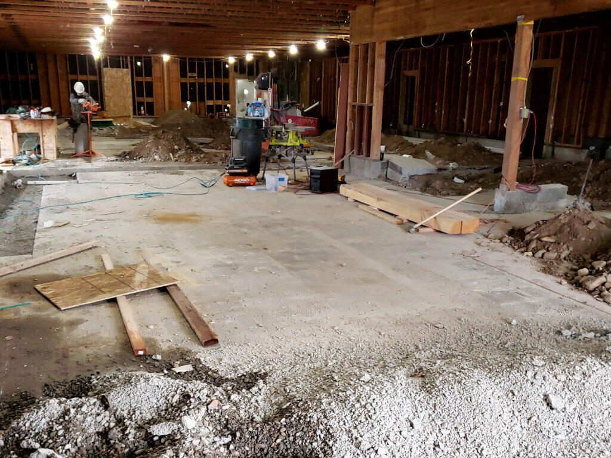
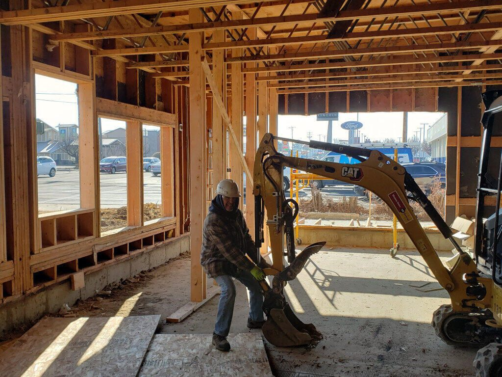
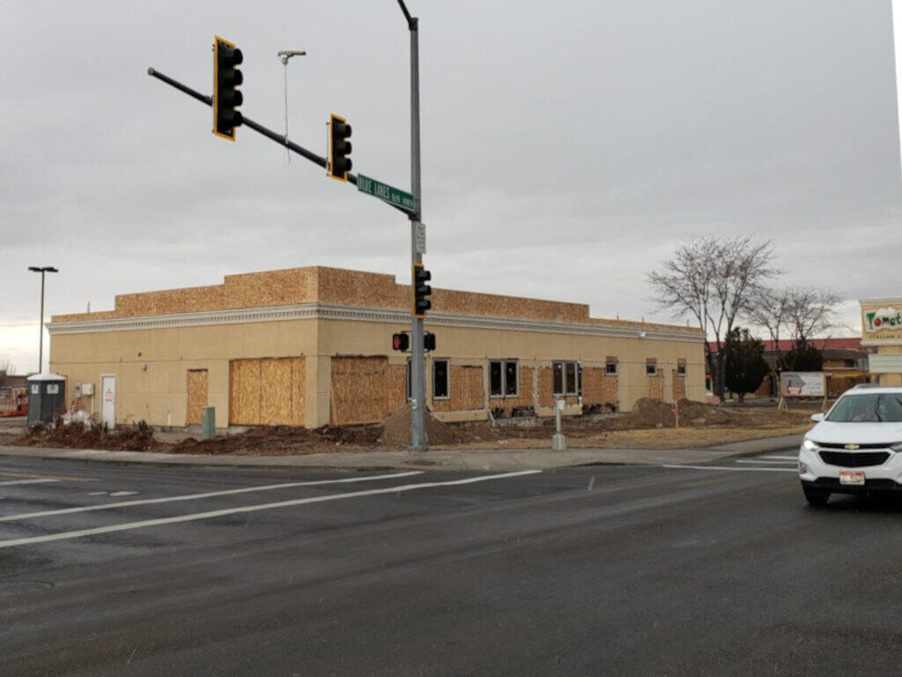

Construction / Past work
Urgent Care on 1309 Blue Lakes Blvd
We performed the demolition and framing on this piece of prime real-estate in the heart of Twin Falls. This building was converted from the Tomatoes restaurant into an Urgent Care clinic. It required a full demolition down to the shell, as well as extensive re-framing.
We were also engaged to provide on-site supervision of sub-contractors during the plumbing, electrical, HVAC, and excavation phases.
I no longer operate the construction company. This project is part of the hands-on background behind my software work.
Back to past construction workProject information
- Category Remodel
- Client Suburban Construction Management
- Project date 2022
- Location 1309 Blue Lakes Blvd
Project photographs
Select any photo for a larger view.









